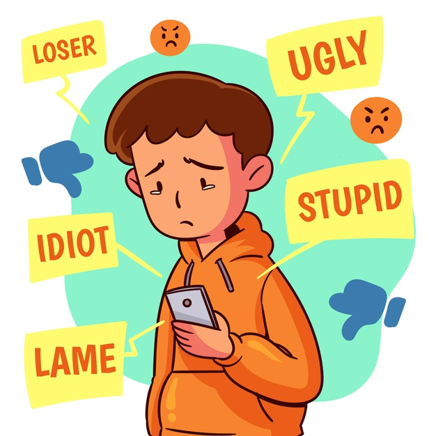

¿QUÉ ES EL CIBERACOSO?
También denominado acoso virtual, es el uso de medios digitales para molestar o acosar a una persona o grupo de personas mediante ataques personales, divulgación de información confidencial o falsa entre otros medios.
CONSECUENCIAS
Ausentismo escolar, abuso en consumo de sustancias nocivas para la salud, depresión y otros problemas psicológico, desarrollo de baja autoestima, cambios en comportamiento, relaciones deterioradas con sus padres y suicidio.
COMO PREVENIRLO
Hablar seguido con los hijos acerca del ciberacoso y otros problemas relacionados con internet, conocer los sitios web que los niños visitan y sus actividades en línea, explicarles que, como madre/padre responsable, debe revisar sus comunicaciones en línea si cree que hay alguna razón para preocuparse, instalar un programa de control parental o de monitoreo es una opción para supervisar la conducta de un niño en internet, seguir a los hijos en los perfiles de redes sociales que tengan, etc.
PROBLEMA MUNDIAL: EL CIBERACOSO
El ciberacoso es un tipo de hostigamiento que ocurre a través de la tecnología electrónica (computadoras, celulares, tablets) y consiste principalmente en mensajes de texto o correos electrónicos desagradables o intimidantes, rumores publicados en redes sociales e imágenes, videos, sitios web o perfiles falsos con información íntima o sucesos embarazosos. De acuerdo con un reciente estudio británico, los niños, adolescentes y adultos jóvenes que son víctimas del ciberacoso pueden tener hasta el doble de probabilidades de hacerse daño a sí mismos o de intentar suicidarse.
¿CÓMO DETECTAR QUE TU HIJO, HERMANO O AMIGO ESTA SIENDO VICTIMA DE ABUSO?.
Podemos detectar que nuestro amigoo familiar esta sufiendo de abuso cibernetico cuando este deja de usar con mucha frecuencia las redes sociales, su rendimeinto academico empieza a bajar, se ahisla de todo, su compotamiento comienza a ser extraño, falta de apetito, entre otros aspectos. Es importante saber reconocerlos a tiempos, antes de que estos se agraven y traigan peridades o problemas irreparables. ¡CUIDEMOS Y APOYEMOS A LAS PERSONAS QUE NOS RODEAN!

AUMENTO EN CASOS DE CIBERACOSO DURANTE LA PANDEMIA
Parte del problema surge debido a que ahora gran parte de los trabajos y la enseñanza se realizan en línea, pero durante la cuarentena también aumentó el tiempo libre, el cual al no poder realizar actividades fuera de casa, se realizan principalmente en línea. Tener más tiempo digital de ocio sumado al estrés que ha aumentado debido a la crisis sanitaria, puede hacer que las personas se vuelvan más hostiles. En su reporte, L1ght descubrió un 40 % de incremento en la toxicidad en plataformas de juegos populares, como Discord. Además, debido a que un mayor número de personas está en línea, existen muchos más posibles agresores y víctimas potenciales.
Contador de visitas
Diseño sitios web